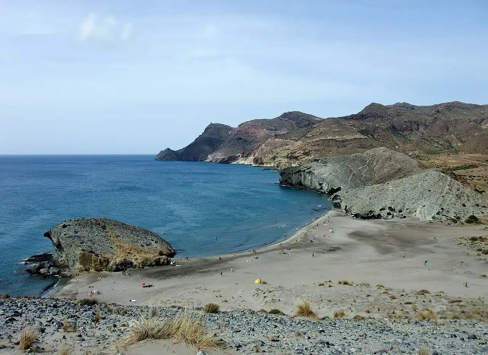

Playa de Mónsul
Cabo de Gata, Andalousie, Espagne · baignade, snorkeling

Plage de sable volcanique dominée par une coulée de lave figée, dans le parc naturel de Cabo de Gata-Níjar. Les rochers aux extrémités se prêtent au snorkeling.
- Lieu
- Cabo de Gata, Andalousie, Espagne
- Niveau
- Débutant
- Activités
- baignade, snorkeling
- Type d'eau
- Mer / océan
- Coordonnées
- 36.73, -2.15 (position approximative du secteur)
Dangers à connaître
- Chaleur et peu d’ombre dans ce paysage semi-désertique.
- Fond qui descend vite et vagues par vent d’est.
Le conseil d'Ocean Buddy
En été, l’accès en voiture est limité et une navette part de San José : vérifie les horaires.
Ouvrir dans Ocean Buddy Télécharger sur l'App Store
Source : Fiche Ocean Buddy · septembre 2026 · à vérifier localement.